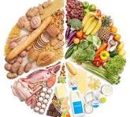
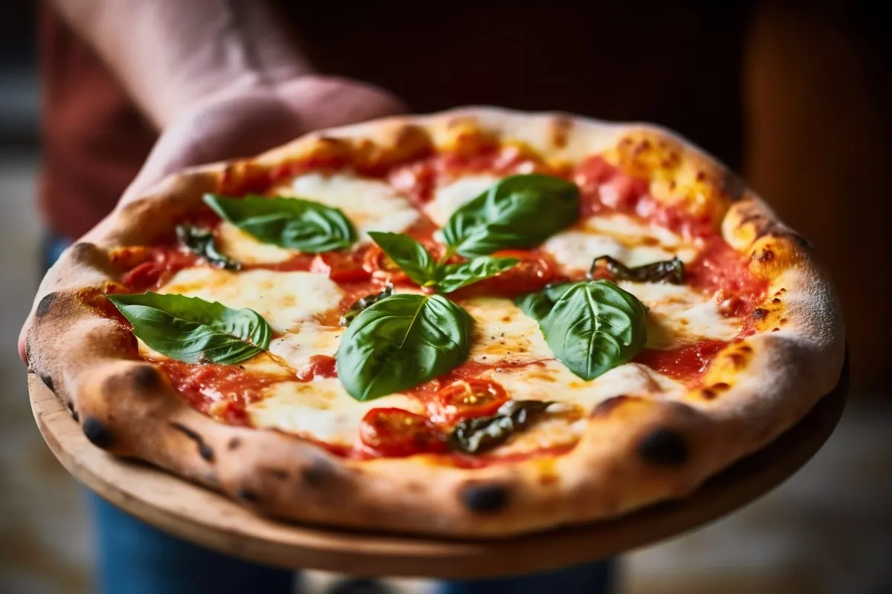

Food is an essential part of life, providing nourishment, pleasure, and cultural significance. It encompasses a vast array of ingredients, cuisines, cooking techniques, and eating habits around the world. Here's a closer look at different aspects related to food

